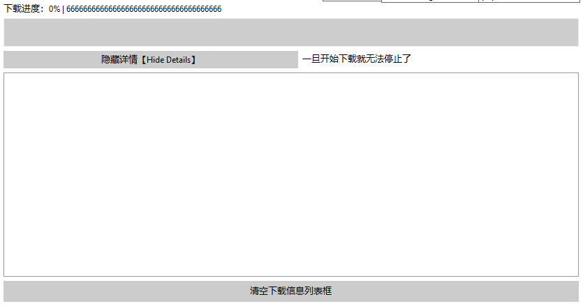

这一章节我将教会大家初步体验下载Libraries的实现！
这一章节不仅仅是介绍下载Libraries，而且会介绍解析原版json并且下载原版jar的功能。这点在后期下载Forge的时候可能会稍有不同。
首先，要想知道如何下载Libraries，我们只需要知道一件事即可很轻松的下载了！
其实，在启动一章节中，我已经很明确的写了一个函数名字叫【ConvertNameToPath】，这个函数用于将版本json中的libraries键下的name键转换成path。
然而事实远远没有想的那么妙，在Forge以及一些老版本的MC中，我们很清楚的知道部分列表里是没有artifact键的，甚至有一些是只有name键在里面，而别的什么键都没有。
如此，我们就需要用到上述的函数了！
我们先来看看MC在1.16.5里面的版本json文件吧！这里我们只看一个键值（因为别的键值没有代表性。。）
{
"downloads": {
"artifact": {
"path": "org/lwjgl/lwjgl/3.2.1/lwjgl-3.2.1.jar",
"sha1": "2bb514e444994c6fece99a21f76e0c90438e377f",
"size": 317748,
"url": "https://libraries.minecraft.net/org/lwjgl/lwjgl/3.2.1/lwjgl-3.2.1.jar"
},
"classifiers": {
"natives-macos": {
"path": "org/lwjgl/lwjgl/3.2.1/lwjgl-3.2.1-natives-macos.jar",
"sha1": "5a4c271d150906858d475603dcb9479453c60555",
"size": 39835,
"url": "https://libraries.minecraft.net/org/lwjgl/lwjgl/3.2.1/lwjgl-3.2.1-natives-macos.jar"
}
}
},
"name": "org.lwjgl:lwjgl:3.2.1",
"natives": {
"osx": "natives-macos"
},
"rules": [
{
"action": "allow",
"os": {
"name": "osx"
}
}
]
},
这是其中一个libraries下的键值，我们可以很轻松的看见，里面是有downloads -> artifact键值的，但是我们需要考虑一种情况，假如没有这个键值应该怎么办呢？
或者还有downloads -> classifiers这个键值，这个键值的意思指的是MC需要解压的natives本地库文件。这个我们在启动一章的时候说过了，我们需要检测这里面的classifiers键值来解压本地库。这个同样也是需要我们下载的！
我们首先来看artifact键值，可以看到里面有4个键值，第一个是path，这个的意思是保存目录的意思，通常保存在{minecraft}\libraries{path}中。
下一个键值是sha1，这个我们目前先不用理会，后期我们会有专门的一章：【校验文件的hash值】这一章会着重讲解这个键值。
下一个是size，这个的意思是该文件总大小，也就是TotalSize，并不是指的是占用大小噢！我们后期教到多线程下载的时候，会根据这个值对网络文件进行切分下载。
下一个是url，这个键值是一个完整的url形式的键值，我们可以从该url中下载到该库。
再接着，我们再来看看下面的classifiers键值，我们可以看到里面有一个【natives-macos】，这个的意思就是这个本地库是苹果系统专属的类库，我们在Windows操作系统上暂时不需要它。
但是这里有个问题，这里有个键名，这个键名就是natives-macos，那么这个键名我们又该如何获取呢？
很简单，我们可以看看在这一整个代码块中有一个natives键，这个键里面会有【osx、windows、linux】3种键值，我们可以直接读取里面的键值，然后就可以读取classifiers下的键值了！
我们接着看下面有个rules键，这个键想必之前我在启动那一大章讲过了，这个是用来判断该库适用于什么操作系统的，拿我的示例来说，这个的意思其实就是only macos的意思。
介绍了这么多，想必各位应该懂得了启动器应该怎么解析这些库并且提取出URL了吧！
噢，对了，我们还需要一个下载进度条显示的窗口，这个窗口我们依旧单独设立一个：

这个窗口里面，我们设置了一个【隐藏详情】，其实就是把列表框隐藏掉，这样在遍历文件的时候会更快一些。
然后还有一个清空列表框。下载进度提示标签，下载进度条和一个Tips。
下面我会给大家打一段代码，详细教教应该怎么弄：
//Button1是开始下载的按钮。
procedure TForm3.Button1Click(Sender: TObject);
begin
//前面省去了一些判断列表框里的元素以及最大线程滑动条是否输入正确的代码。
//在这里，我们使用versionPath和minecraftPath来表示{minecraft}\versions\{versionname}和{minecraft}根目录的意思。
//这里的versionPath是由【{minecraftPath}\versions\】加上窗口文本框里的文本拼接而成的
//上述，大家可以自行尝试制作一个版本管理部分来实现替换这两个变量的代码噢！
//这里省去了判断（
if not DirectoryExists(versionPath) then ForceDirectories(versionPath);
//此时版本文件夹应该还没有生成。这里判断文件夹是否存在，如果不存在则强制生成一次。
Form4.Show; //这里直接将下载进度条框给展示出来。
if ListBox2.ItemIndex <> -1 then begin
//TODO：制作加载器等的安装。
end else begin //only原版
TTask.Run(procedure begin //定义一个线程。
Form4.ListBox1.ItemIndex := Form4.ListBox1.Items.Add('已检测出下载的是：原版');
end);
end;
end;
切记，上述出现了一句话：【省去了判断】，这个的意思就是说以下【变量/函数/过程】我们本来就是从始至终都没有在教程中出现的，需要各位自己根据本教程的注释内容进行替换。所以大家自行查看原文的代码注释中是否出现了这一句噢
随后，我们单独在那个else代码块里面开始写代码【因为我们现在主要是教下载原版】
var jurl := urlsl[Form3.ListBox1.ItemIndex]; //获取下载链接
//这里本来应该有一个判断，因为我们需要删除{minecraftpath}\versions\{versionpath}下的所有文件，因此我们可能需要设置一个信息框让用户点击确定。
DeleteDirectory(versionPath); //这个函数的意思是删掉该文件夹，包括文件夹里面的所有文件的函数，各位用自己熟悉的编程语言实现一次就好了！
if not DirectoryExists(versionPath) then ForceDirectories(versionPath);//这里我们重新生成一次该文件夹。如果文件夹的确不存在的话。
case tsd of //使用case判断下载源。这里仅仅只需要
1: Form4.ListBox1.ItemIndex := Form4.ListBox1.Items.Add('已检测出下载源：官方源');
2: begin
jurl := jurl.Replace('https://piston-meta.mojang.com', 'https://bmclapi2.bangbang93.com');
Form4.ListBox1.ItemIndex := Form4.ListBox1.Items.Add('已检测出下载源：BMCLAPI');
end;
3: begin
jurl := jurl.Replace('https://piston-meta.mojang.com', 'https://download.mcbbs.net');
Form4.ListBox1.ItemIndex := Form4.ListBox1.Items.Add('已检测出下载源：MCBBS');
end;
end;